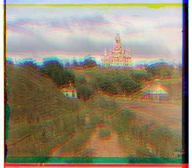
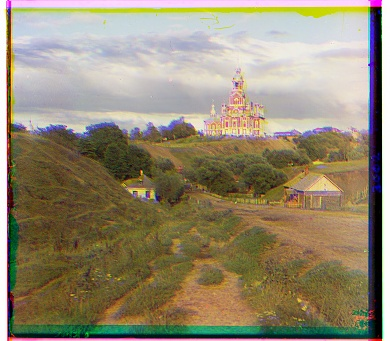
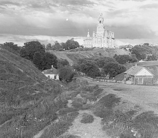

Part 1: Single-scale Alignment

To begin transforming the gray-scaled glass plate images into a single colored one, they first had to be preprocessed
such that our alignment program could interpret their pixels. This meant converting the images into float arrays using
cv.imread() and im.astype(np.float32). This transformation into an array allows us to
separate the image into its three glass plates, which then can be stacked together via np.dstack().
However, the resulting image at this point isn't much better than just a gray-scaled one as the colors are all
over the place.

To further improve our images, we need to properly align the different glass plates on top of each other. We will use
L2 Norm, which is defined by the equation sqrt(sum(sum((image1-image2)^2))). This formula works as it
checks by the pixel-wise difference between the two plates. If the two plates are perfectly aligned with
one another, then the score will be relatively low, albeit likely not 0 as there may be difference in illuminant.
Now that we can score the alignment of the plates, we need to be able to loop through different alignments to figure out
which is the true one. To do this, we will hold the blue plate still, and shift the green and red plates around via
np.roll(), taking the one that scores the best. We will cap the maximum shift distance to be 15 pixels in
both dimensions, as it contains the most likely solution and any more would increase the processing time by a substantial
amount.

While much better than the unaligned image, there are still a few unaligned spots present. To fix this, we will crop down our images as the border contains a lot of external details that are different between glass plates of the same photo. This makes our L2 Norm a bit inconsistent, as the border would still be adding or subtracting from the final score. And while this does cut out information from the photos, overall it helps the L2 Norm focus on the important parts.

When testing on the cathedral, the cropped pixel amount was fixed to be 20 pixels. In order to generalize it to the other photos, the fixed 20 pixels became 10% of each side. This is especially important later on with the multi-scaled alignment as for the larger photos, 20 pixels won't be enough to cover the entire border.